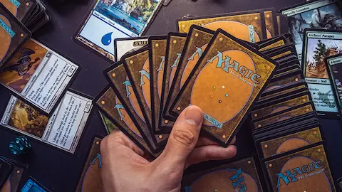

Secrets of Strixhaven salió a las tiendas el 24 de abril y los sobres ya están abiertos, los decks en construcción y las cartas del Mystical Archive cotizando. Pero el momento más importante del lanzamiento llega la semana siguiente: el Pro Tour Secrets of Strixhaven, que se celebra del 1 al 3 de mayo dentro de MagicCon Las Vegas. Para la comunidad competitiva, el Pro Tour no es solo un torneo ⬠es el evento que decide qué cartas de cada nuevo set son realmente buenas y cuáles se quedan en la teoría. Tres días de Magic de máximo nivel en Las Vegas, con todos los focos del circuito internacional puestos en el nuevo set.
El formato es el habitual en los Pro Tours de la era moderna: dos rondas de Booster Draft y seis rondas de Standard Constructed el primer día, con el corte al segundo y tercer día para los jugadores que superen el umbral de victorias. El Standard 2026 llega al torneo con las cartas de Secrets of Strixhaven ya integradas, lo que significa que los jugadores habrán tenido solo unos días para preparar sus listas. En este contexto, los equipos que más horas de testing han metido en los días previos al evento suelen sacar ventaja. El Mystical Archive ⬠la bonus sheet de cartas históricas que regresa con Secrets⬠es legal en Standard, lo que añade herramientas adicionales a los arquetipos de control y combo.
El premio total asciende a 500.000 dólares, con 50.000 para el primer clasificado más puntos adicionales para el circuito anual. Cada participante en el Pro Tour recibirá además una carta promo de Tamiyo, Inquisitive Student en versión no foil, uno de los personajes centrales del lore de Strixhaven. Más allá del torneo principal, MagicCon Las Vegas incluye side events de Legacy, Modern y Pioneer, torneos abiertos, meet & greet con jugadores profesionales y el ambiente de convención que convierte estos eventos en destinos en sí mismos para cualquier fan de Magic.
Con el Pro Tour a una semana del lanzamiento, la comunidad tiene por delante días intensos de análisis, construcción de mazos y especulación sobre el metagame. Los streamers ya han mostrado las cartas en el Early Access Event de Arena (15 de abril) y en el Prerrelease (17 de abril), pero el torneo es donde se sabrá de verdad qué funciona bajo presión competitiva real. Que Secrets of Strixhaven haya devuelto Magic a territorio propio ⬠sin licencias externas⬠después de meses de Universes Beyond hace que este Pro Tour tenga un sabor especial para los fans del juego.